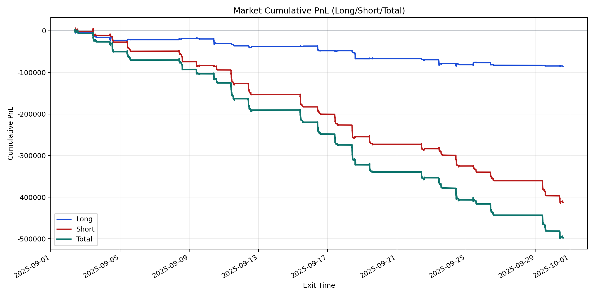
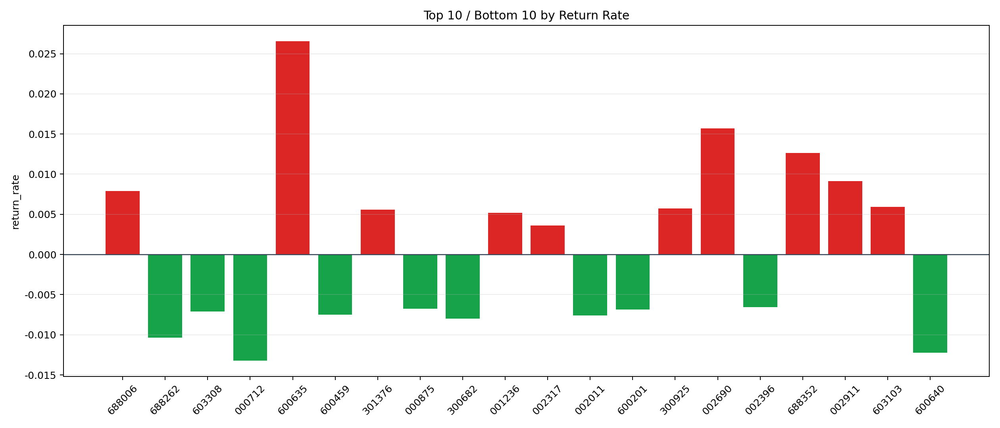

| repo_root | /home/haoranyou/data/output/dynamic_AUM_TAKER_index1000 |
|---|---|
| period_months | 1 |
| period_label | 2025-09-02_to_2025-09-30 |
| start_time | 2025-09-02 09:48:27 |
| end_time | 2025-09-30 14:45:27 |
| n_trades | 21882 |
| n_symbols | 367 |
| total_pnl | -497647.025050004 |
| long_total_pnl | -85359.89739999853 |
| short_total_pnl | -412287.12765000545 |
| total_entry_notional | 384444348.99999994 |
| long_entry_notional | 94262961.0 |
| short_entry_notional | 290181388.00000006 |
| total_return_rate | -0.0012944579009795878 |
| long_return_rate | -0.0009055507751342389 |
| short_return_rate | -0.0014207910799916821 |
| top_symbols_by_return | ["600635", "002690", "688352", "002911", "688006", "603103", "300925", "301376", "001236", "002317"] |
| bottom_symbols_by_return | ["000712", "600640", "688262", "300682", "002011", "600459", "603308", "600201", "000875", "002396"] |

